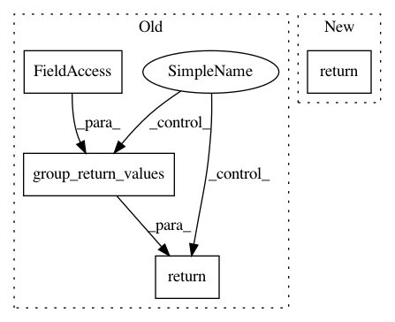

4a28bbf9659d96e15f0f241bcab76381e299097c,pymanopt/autodiff/backends/_tensorflow.py,_TensorFlowBackend,compute_gradient,#_TensorFlowBackend#,69
Before Change
flatten_arguments(points))
}
return self._session.run(gradient, feed_dict)
return group_return_values(nary_gradient, arguments)
@staticmethod
def _hessian_vector_product(function, arguments, vectors):
Multiply the Hessian of `function` w.r.t. `arguments` by `vectors`.
After Change
return self._session.run(gradients, feed_dict)
if len(variables) == 1:
return unpack_singleton_iterable_return_value(gradient)
return gradient
@staticmethod
def _hessian_vector_product(function, arguments, vectors):
Multiply the Hessian of `function` w.r.t. `arguments` by `vectors`.
In pattern: SUPERPATTERN
Frequency: 3
Non-data size: 4
Instances
Project Name: pymanopt/pymanopt
Commit Name: 4a28bbf9659d96e15f0f241bcab76381e299097c
Time: 2020-02-01
Author: niklas.koep@gmail.com
File Name: pymanopt/autodiff/backends/_tensorflow.py
Class Name: _TensorFlowBackend
Method Name: compute_gradient
Project Name: pymanopt/pymanopt
Commit Name: 818492efd4238bd8fedcff105bd46044a714f762
Time: 2020-02-01
Author: niklas.koep@gmail.com
File Name: pymanopt/autodiff/backends/_pytorch.py
Class Name: _PyTorchBackend
Method Name: compute_gradient
Project Name: pymanopt/pymanopt
Commit Name: 775bf75f5a28c56d333fb57f34c4926498ab19be
Time: 2020-02-01
Author: niklas.koep@gmail.com
File Name: pymanopt/autodiff/backends/_theano.py
Class Name: _TheanoBackend
Method Name: compute_gradient